| GUÍA DE CONFIGURACIÓN · VERSIÓN 2.0 Handover Xn entre gNB Vankom vkScell-g3 con núcleo EllaCore Procedimiento unificado para movilidad intra-frecuencia con audio y vídeo en tiempo real Fuentes: Manual vkScell-g3 V1.0.0 y Neighbor Cell Configuration Guide (Vankom, 26/06/2026) Firmware de referencia: 3181 o superior (probado por Vankom en 3184) Interfaz de gestión: LMT (Local Maintenance Terminal) Versión 2.0 | 13 de octubre de 2026 |
Índice
1. Principio de funcionamiento 3
2. Esquema de conexionado y datos a planificar 3
- [Datos a recopilar antes de empezar 3](#datos-a-recopilar-antes-de-empezar)
3. Procedimiento de configuración 4
[3.1 Comprobaciones previas 4](#3.1-comprobaciones-previas)
[3.2 Interruptores de medida (CU) 4](#3.2-interruptores-de-medida-\(cu\))
[3.3 Eventos de medida intra-frecuencia 4](#3.3-eventos-de-medida-intra-frecuencia)
[3.4 Vecina intra-frecuencia (base del NG handover) 5](#3.4-vecina-intra-frecuencia-\(base-del-ng-handover\))
[3.5 Relación Xn entre gNB (PeerGnb) 5](#3.5-relación-xn-entre-gnb-\(peergnb\))
[3.6 Reinicio y verificación 5](#3.6-reinicio-y-verificación)
4. Ajustes para audio y vídeo en tiempo real 6
Anexo A. Puntos a confirmar con Vankom 6
Anexo B. Cambios respecto a la versión 1.0 6
1. Principio de funcionamiento {#1.-principio-de-funcionamiento}
Según Vankom, el modo de handover por defecto de estos gNB es el NG handover (el traspaso se coordina a través del core por la interfaz N2) y el handover Xn se configura sobre esa misma base. Por eso el orden es: (1) medidas y vecinas, comunes a ambos modos, y (2) alta de la relación Xn entre los dos gNB. Sin medidas ni vecinas no funciona ninguno de los dos.
Requisitos: firmware 3181 o superior; ambas celdas activas con la misma banda, ARFCN SSB y SCS; EllaCore con los dos gNB registrados (NG Setup correcto) y con handover N2 permitido entre ellos. Todo el procedimiento se aplica de forma simétrica en gNB-A y gNB-B.
2. Esquema de conexionado y datos a planificar {#2.-esquema-de-conexionado-y-datos-a-planificar}
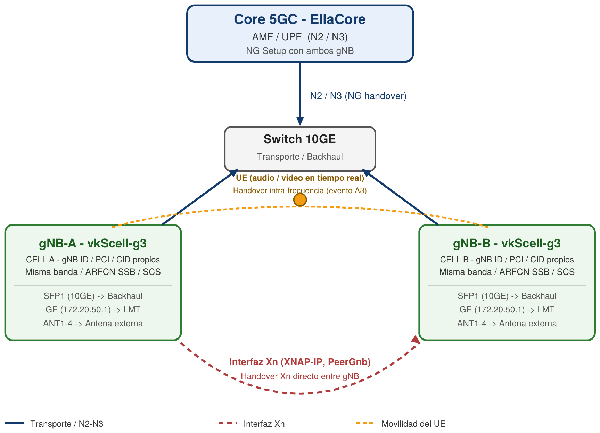
gNB-A y gNB-B (misma frecuencia) conectados al core EllaCore por N2/N3 y entre sí por Xn. El UE se desplaza entre ambas celdas mientras transmite audio/vídeo.
Datos a recopilar antes de empezar {#datos-a-recopilar-antes-de-empezar}
| Parámetro | gNB-A | gNB-B | Observación |
|---|---|---|---|
| gNB ID | 1111 | 2222 | Distinto en cada gNB (el valor por defecto es 0, en Quick Start → Base Station Parameters). Se usa como Gnb_id en el apartado 3.5 |
| PCI | 1 | 2 | Distinto en cada celda |
| Cell ID (NRCellIdentity) | 1111 | 2222 | Distinto en cada celda |
| PLMN / TAC | 00101/1 | 00101/1 | Iguales a lo configurado en EllaCore |
| Banda / SSB ARFCN / SCS | 78/2305,25/30 | 78/2305,25/30 | Idénticos en ambas celdas. Confirmar la banda real en Overview → Base Station Capabilities (el manual declara N41/N78) |
| IP eGTPU (N3) / NGAP (N2) | 192.168.99.99 | 192.168.101.101 | Con ping al core |
| IP XNAP (Xn) | 192.168.99.99 | 192.168.101.101 | Alcanzable entre ambos gNB |
| IP del AMF (EllaCore) | (común a ambos)192.168.168.205 | 192.168.168.205 | AMF Server Address |
3. Procedimiento de configuración {#3.-procedimiento-de-configuración}
3.1 Comprobaciones previas {#3.1-comprobaciones-previas}
-
Versión de software 3181 o superior (Overview → Base Station Information).
-
Celdas activadas en ambos gNB (Overview → Community Information) y datos de la tabla anterior sin duplicados donde deben ser únicos.
-
Ping entre las IP XNAP de ambos gNB y NG Setup correcto con EllaCore.
3.2 Interruptores de medida (CU) {#3.2-interruptores-de-medida-(cu)}
Configuration Management → Base Station → CU → Power Control Information → Default Measurement Parameter Configuration during UE Initial Access
Habilitar “Measurement Switch”, para ello nos desplazamos en el menú de la izquierda en “Configuration/GNB/CU/OperatorInfo/DEFAULT_MEAS_TO_CONFIG:
![][image2]
Poner a 1: A1 Measurement Switch (Measurement_A1), A2 Measurement Switch (Measurement_A2) y el interruptor de A3 de misma frecuencia (Intra_Meas_A3). Pulsar Save and Issue.
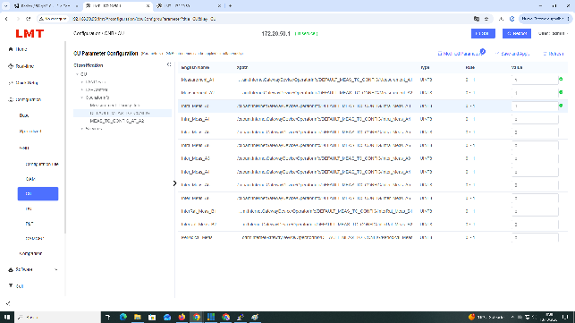
Estos interruptores viajan al UE en la segunda reconfiguración RRC tras el acceso. A2 debe estar activado y entregarse en el acceso inicial (requisito de Vankom). Alternativa validada por Vankom: A1 y A2 en el acceso inicial y A3 en «Measurement Parameter Configuration after A2 Measurement Received», de modo que A3 solo se entrega cuando el UE informa A2. Se recomienda la primera opción (A3 en el acceso inicial) para que la preparación del handover no dependa de una reconfiguración en el borde de celda (criterio propio, no de Vankom). A4 y B1 no son necesarios (son de inter-frecuencia e inter-RAT).
3.3 Eventos de medida intra-frecuencia {#3.3-eventos-de-medida-intra-frecuencia}
Neighborhood Management → Neighborhood Configuration → MeasControlList → MeasControl[name=meas1]
Iremos al menú de la izquierda a “Neighbor Cell” y luego arriba a la derecha pulsamos sobre “Configuration”:
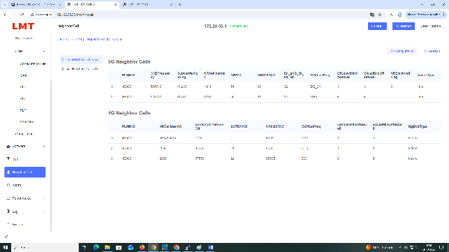
Se nos abre otro menú interno:
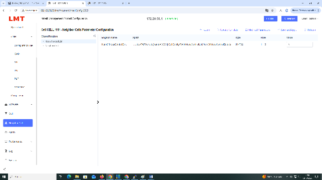
Una vez aquí meterse en “MeasControlList/MeasControl/EventConfig”
Cada MeasControl corresponde a un PLMN: comprobar que su PLMNList es la de la red.
Para intra-frecuencia, IntraFreq se deja con los valores por defecto y no hay que tocar InterFreq. Después, en EventConfig:
| Evento | Ruta (bajo EventConfig) | Parámetro | Ejemplo Vankom | Significado |
|---|---|---|---|---|
| A1 | A1Event → TriggerQuantityThreshold | ThresholdRSRP | 96 | Servidora mejor que -60 dBm (156 - 60) |
| A2 | A2Event → TriggerQuantityThreshold | ThresholdRSRP | 76 | Servidora peor que -80 dBm (156 - 80) |
| A3 | A3Event → TriggerQuantityOffset | OffsetRSRP | 5 | Vecina 5 dB mejor que la servidora (valor en dB, rango -30 a 30) |
Pondremos esos valores en:
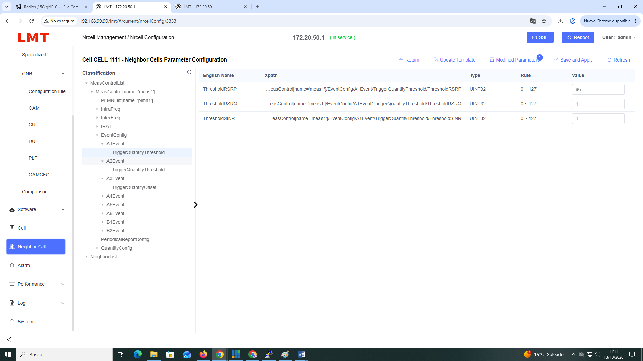
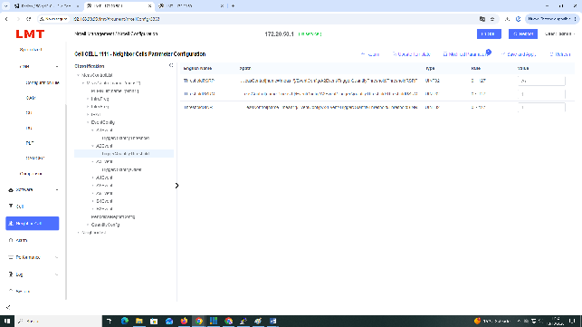
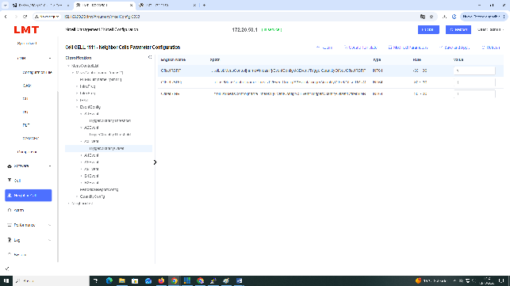
Cambiamos los valores según la tabla anterior:
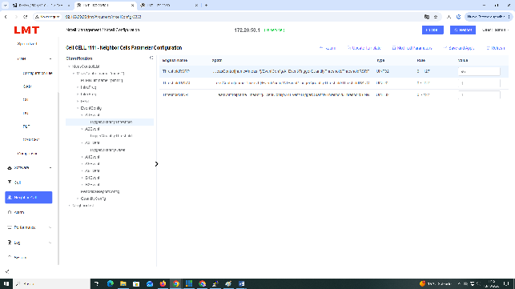
Este se deja con el mismo valor:
Por último:
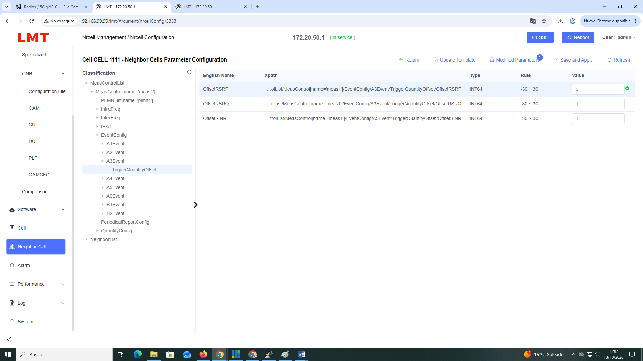
Vankom indica que son valores estimados que no tienen en cuenta histéresis ni offsets: ajustarlos al entorno radio. El parámetro TriggerQuantity de EventConfig viene por defecto en RSRP, y el resto de parámetros de EventConfig pueden dejarse por defecto.
Importante: Variante SINR. El evento A3 no usa «Threshold» sino «Offset»: la v1.0 de este manual citaba ThresholdSINR para A3, lo cual era incorrecto. Para basar A3 en SINR habría que poner TriggerQuantity \= SINR y configurar OffsetSINR (rango -30 a 30) en lugar de OffsetRSRP. Esa variante no aparece en la guía de Vankom (solo documenta RSRP) ni se conoce la unidad de OffsetSINR. Recomendación: validar primero todo con RSRP y pedir a Vankom confirmación por escrito antes de pasar a SINR (Anexo A).
3.4 Vecina intra-frecuencia (base del NG handover) {#3.4-vecina-intra-frecuencia-(base-del-ng-handover)}
Neighborhood Management → Neighborhood Configuration → NeighborList → IntraFreqCell
Nos metemos en el menú izquierdo sobre “Neighbor Cell”, luego en “Configuration” y dentro de él, sobre “NeighborList” y pinchamos sobre “IntrafreqCell” y comprobamos que:
- Activar SIB3: X_VENDOR_SIB3_ENABLED \= 1 (Vankom exige SIB3/SIB4/SIB5 activos; SIB4 y SIB5 pertenecen a InterFreqCell e InterRATCell y aquí no se usan).
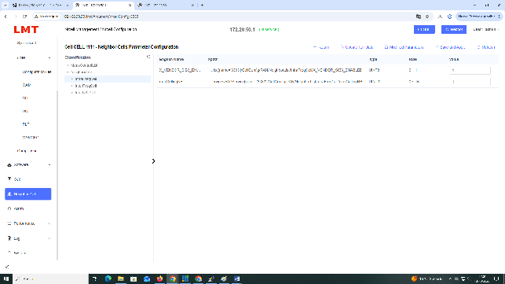
Luego le damos al “+” en “IntrafreqCell” para añadir la o las celdas vecinas:
- Pulsar [+] y rellenar la celda del otro gNB: PLMN, CID (NRCellIdentity), SCS, PCI y TAC. El resto (QOffsetCell, QRxLevMinOffsetCell, QQualMinOffsetCell, en_gNB_ID_bit_len) puede quedar por defecto. Aceptar con OK.
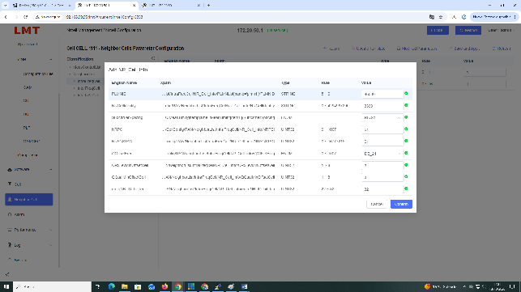
Ponemos nuestros valores y confirmamos.
-
En la vecina creada, NRFreqInfo → NRTDDInfo → NRFreqBandList → NRFreqBandItem → NRFreqBand: número de banda (el ejemplo de Vankom usa 78).
-
En la vecina, MTC → MeasTimingItem: SSBFrequency (idéntica a la propia, por ser intra-frecuencia) y SubcarrierSpacing (30 kHz en el ejemplo).
-
Pulsar Save and Deliver. Repetir en el otro gNB apuntando de vuelta. Se pueden añadir varios PLMN a la misma vecina con [+].
3.5 Relación Xn entre gNB (PeerGnb) {#3.5-relación-xn-entre-gnb-(peergnb)}
Configuration Management → Base Station → CU → Base-station access control → PeerGnb → Gnb_nbr_list
Nos desplazamos por el menú izquierdo “Configuration/GNB/CU/FAPControl/PeerGnb/Gnb_nbr_list” y pinchamos sobre él:
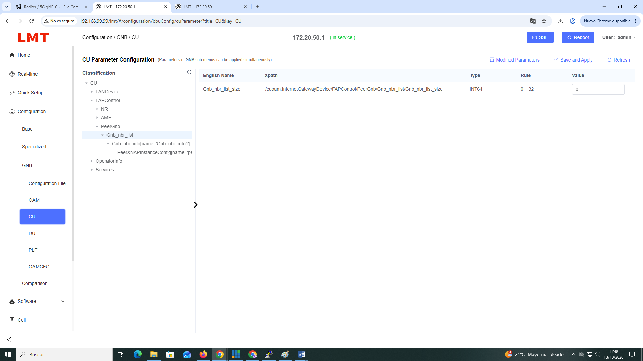
1) Poner Gnb_nbr_list_size al número de vecinos Xn (rango 0 a 32; 1 en el ejemplo de Vankom). Esto habilita Xn.
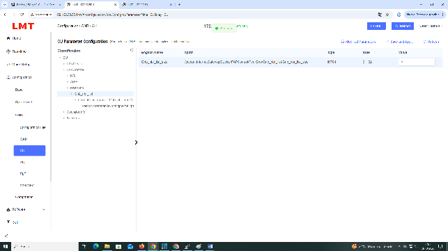
2) Pulsar [+] y crear una entrada Gnb_nbr_info con los datos del otro gNB:
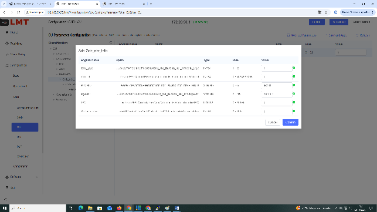
| Parámetro | Valor | Observación |
|---|---|---|
| Gnb_id | gNB ID del vecino | Vankom lo describe como «Cell ID»; el parámetro es el gNB ID (ejemplo: 33001). Ver Anexo A |
| PLMNID | PLMN del vecino | Ejemplo: 46001 |
| peer gNB server address (MyAddr) | IP XNAP del vecino | Ejemplo Vankom: 192.169.11.67 (no copiar) |
| TAC | TAC del vecino | Ejemplo: 62 |
| Gnb_type | 1 | Valor del ejemplo; significado no documentado |
| Xn_ho_status | 1 | Valor del ejemplo; significado no documentado |
| NumOfPeerXNAPInstanceConfig | 1 | Rango 1 a 4; valor del ejemplo |
Pulsar Save and Issue y repetir en el otro gNB con los datos del primero. La entrada muestra también Xn_connection_status (7 en el ejemplo, sin documentar); anotar su valor tras el reinicio y confirmar su significado con Vankom (Anexo A).
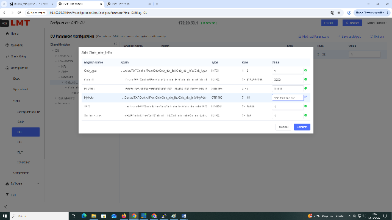
3.6 Reinicio y verificación {#3.6-reinicio-y-verificación}
-
Reiniciar ambos gNB (Overview → Restart Device → OK). El manual V1.0.0 lo exige para los cambios de parámetros de base; la guía de Vankom no lo precisa para vecinas y Xn, por lo que se recomienda hacerlo igualmente.
-
Vecinas: en Neighborhood Management → Neighborhood Information, cada gNB debe listar al otro como vecino 5G con PCI, CID y TAC correctos.
-
Xn: la entrada de PeerGnb debe permanecer guardada tras el reinicio; anotar el valor de Xn_connection_status (7 en el ejemplo de Vankom).
-
Medidas: con un terminal con herramienta de logging, comprobar que la segunda RRCReconfiguration incluye A1, A2 y A3 (es el método de validación de Vankom).
-
Handover: con el UE transmitiendo, desplazarlo entre ambas celdas y revisar Performance Management → Counter (contadores de handover) y KPI K920 (éxito de handover intra-sistema).
4. Ajustes para audio y vídeo en tiempo real {#4.-ajustes-para-audio-y-vídeo-en-tiempo-real}
-
Offset de A3: empezar con 5 dB (ejemplo de Vankom). Bajarlo si la señal se degrada antes del traspaso; subirlo si hay ping-pong entre celdas. Mantener solape de cobertura suficiente entre ambas celdas.
-
QoS: el 5QI de los flujos de audio/vídeo lo define EllaCore; comprobar en Configuration Management → QOS que el gNB tiene un perfil con ese 5QI (el LMT trae perfiles GBR 5QI 1 a 4 y 82, y Non-GBR).
-
PDCP/temporizadores de descarte: dejar por defecto y tocarlos solo si se mide latencia excesiva.
Anexo A. Puntos a confirmar con Vankom {#anexo-a.-puntos-a-confirmar-con-vankom}
-
¿Se soporta A3 basado en SINR? Valores del enum TriggerQuantity y unidad de OffsetSINR (la guía solo muestra RSRP).
-
Significado y valores válidos de Xn_ho_status, Xn_connection_status, Gnb_type y NumOfPeerXNAPInstanceConfig.
-
Gnb_id: confirmar que es el gNB ID (Quick Start) del vecino y su relación con en_gNB_ID_bit_len.
-
Criterio de selección entre Xn y NG handover cuando ambos están configurados, y comportamiento si falla Xn.
-
Dónde se ajustan histéresis y time-to-trigger de los eventos (aparecen en la traza RRC, no en la guía).
-
Si es necesario reiniciar tras dar de alta vecinas y Xn.
-
Valores X_VENDOR_NR_STATUS y X_VENDOR_HO_STATUS de la vecina (2 y 1 en el ejemplo) y si deben modificarse.
-
Banda real del equipo: el manual declara N41/N78 y el LMT mostró un rango N78 (3300-3600 MHz).
Anexo B. Cambios respecto a la versión 1.0 {#anexo-b.-cambios-respecto-a-la-versión-1.0}
| Tema | Versión 1.0 | Versión 2.0 (según guía de Vankom) |
|---|---|---|
| Parámetro de A3 | ThresholdSINR en A3Event → TriggerQuantityThreshold | A3 usa TriggerQuantityOffset (OffsetRSRP / OffsetRSRQ / OffsetSINR) |
| Métrica del evento | Selector supuesto | Confirmado: parámetro TriggerQuantity, por defecto RSRP |
| SIB3 | No mencionado | X_VENDOR_SIB3_ENABLED \= 1 en IntraFreqCell |
| Configuración Xn | Solo CU_XNAP-IP Address | Alta del vecino en CU → PeerGnb → Gnb_nbr_list |
| Modo de handover | No indicado | NG handover es el modo por defecto; Xn se añade encima |
| gNB ID | No mencionado | Debe ser distinto en cada gNB |
| Banda | N77 | A confirmar: el equipo declara N41/N78 |